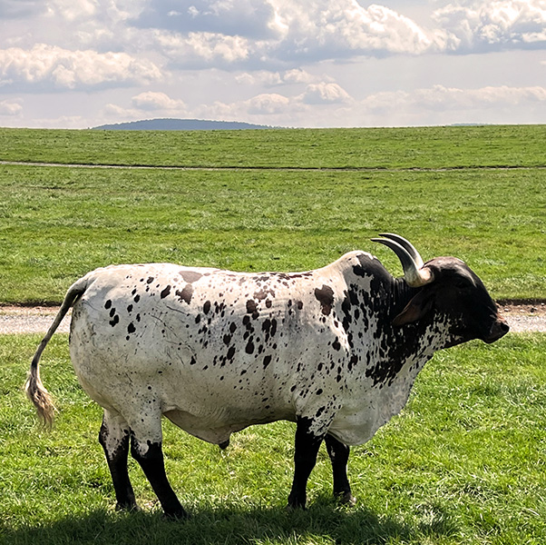

Not every farm has longhorns, but there are some that do. The picture shows one of the many Texas Longhorns at Lake Tobias Wildlife Park in Halifax, PA. Their breed is known for their horns, which are shown in their name, of course. Many people do not realize that both males and females grow horns in this breed of cattle. To most, the Texas Longhorns are breathtakingly beautiful creatures. Believe it or not, these cattle are also friendly and very intelligent.
